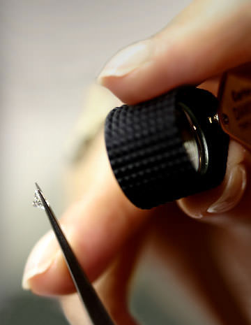
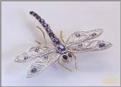
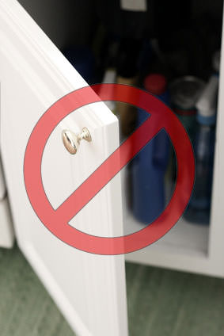

As a customer of Jewelry Designs you will soon find out that our staff does a magnificent job of jewelry cleaning. Not just the "dip in the tank" process that most jewelers offer, but a thorough, professional polishing, conducted by the same experts who create fine jewelry in our shop.
Anytime you visit our location you can take advantage of our jewelry cleaning services and all of the equipment that we use to properly refinish your jewelry, while you wait. During your jewelry cleaning, our staff will provide several stages of polishing along with steam and ultrasonic cleansing. These trained jewelers understand the nature of delicate materials, gemstones, and patinas and how to avoid damaging precious items while working on them. And the best part is we provide this service for free.
Jewelry Inspection

Before polishing your possessions, we will do a thorough jewelry inspection to diagnose any wear or erosion that is developing. If we find any wear or erosion, we will recommend preventive maintenance that could help you avoid losing a stone, keep a bracelet from falling off, or save a pendant from dropping from a broken chain. During our jewelry inspection, we will tighten any loose stones that are detected. In most cases, our setters will snug them while you wait at no cost.
Precious metals are soft and can easily shift. We recommend that all regularly worn gemstone jewelry should be cleaned and inspected every six months to insure that the gems will remain in the settings. Frequently worn items mounted with gemstones should be viewed by a qualified jeweler and inspected for wear on prongs and closures in order to avoid the heart break of a lost stone. When worn everyday, well-used jewelry is exposed to coarse, abrasive surfaces. Over a period of time, all precious metal jewelry is prone to erosion and metal fatigue. If we recognize symptoms of wear we will inform you so that you can arrange for the appropriate jewelry repair.
Jewelry Cleaning at Home
The most effective way to clean your jewelry is to bring it to Jewelry Designs. None the less we are often asked about jewelry at home. It is not always easy to visit our store when you decide that you need a little extra sparkle. It seems that we typically realize we need jewelry cleaning when we look down to notice that stones are lacking their sparkle on a Saturday night, before going out to dinner or while dressed for a wedding. So here are a few tips. In order to properly perform jewelry cleaning at home you must first have an understanding of what your jewelry is made of.
Jewelry Cleaning No No's
Many materials should not be cleaned at home. Below are a few examples of jewelry that should be handled cautiously.
1. Organic stones or materials such as pearl, ivory, bone, coral, wood, leather, cord, or string should not be exposed to harsh detergents or soaked in liquids or ultrasonically cleaned. These commonly used jewelry materials may absorb the fluids and be damaged or stained permanently.
2. Antique or rare artist jewelry should not be tampered with at home. Polishing and jewelry cleaning can destroy the patina and integrity of some rare jewelry.
3. Coins should never be polished and cleaned by a non-professional.
4. Some gemstones are treated with or have natural oils that can be disturbed by detergents during jewelry cleaning. Some stones are porous and can absorb detergents or moisture. Here are a few gems to handle with extreme caution and care: Emerald, Opal, Turquoise, Lapis Lazuli, and all of the organic stones and materials listed above.
5. Chemical exposure can lead to disaster. Soaking jewelry in chlorine-based cleaners can completely dissolve a piece of jewelry, leaving
behind only the stones.Jewelry Don'ts Likewise, constant exposure to pool chlorine can decay the solders used to make jewelry. A small bead of mercury from a broken thermometer will permeate gold and contaminate any other jewelry that it comes in contact with. This has been known to render entire jewelry boxes of valuable jewelry useless. As a rule, any corrosive household products containing acids, lye, or chemicals that you yourself should not be exposed to is probably not good for jewelry cleaning.
6. Polishing plated metals with abrasive compounds can wear through the plating. The micron plating solution used on many pieces of costume jewelry is thin, and abrasive compounds can wear through to the underlying metals. Once the base metals are exposed, they may vary in color or tarnish with time.
7. Caution should be taken when using ultrasonic cleaners. Ultrasonic cleaners use high frequency waves to release makeup grime and dirt from your jewelry. The process involves vibration.



* Vibration causes erosion when two items are rubbing against one another or the side of an ultrasonic tank.
* Vibration can loosen stones, epoxy or glue.
* Vibration can shatter fragile materials such as amber and enamel.
* Vibration can change the color or remove surface enhancements on many of the novelty gems in the market place today.
* Vibration can dislodge fills from stones that have additives.
* Once you have determined that your jewelry can be cleaned in an ultrasonic cleaner, the tips below can help you with your safe cleaning.
* Use only recommended ultrasonic jewelry cleaning solutions.
* Be sure that your items are positioned so that they do not rub on one another or the bottom and side of the ultrasonic tank.
* Do not leave jewelry unattended in an ultrasonic cleaner for extended periods of time.
Proper Jewelry Cleaning at Home
Now that you have an understanding of what you need to be careful with, let's review the many things you can do to take care of your jewelry and make it look great.
The easiest way to keep your jewelry looking terrific is to perform jewelry cleaning regularly. It is much easier to remove a thin layer of hairspray, lotion, or makeup than a long-term build up. The more often you clean your jewelry the easier the process.
Polishing Precious Metals
You can brighten your jewelry by obtaining a jewelers rouge cloth or a velvet cloth from your local jeweler. These are soft cloths charged with mild polishing compounds used to brighten jewelry. The polishing materials on the cloths are not abrasive enough to damage your stones or metal, but when rubbed vigorously against gold or silver will provide a nice luster. When you are finished polishing your jewelry, you can clean it to remove any of the compounds left behind
Be sure to put your jeweler's cloth in a dust free container such as a poly bag when you are finished. This will prevent the cloth from picking up grit and foreign matter that may scratch your items the next time you use it.
Cleaning Diamonds Gold and Platinum
Gold, diamonds, platinum, sapphire, ruby, and most durable stones not listed above in the "Don'ts" section can be easily cleaned. Simply mix a solution of 1/2 Windex and 1/2 warm water. It is not necessary to create a large batch; a half cup is usually sufficient. Make sure the room is ventilated. Soak the items for as long as it takes to loosen the buildup. Remove the items and simply scrub them with a soft toothbrush. Be sure to press the bristles gently between the prongs and in all of the creases of the jewelry. If the residue is stubborn repeat the process. Be sure to rinse your jewelry thoroughly and dry to avoid irritation of the skin. Some people like to dry the stones on the underside with canned air, in order to avoid water spots. Once again, the more frequently jewelry cleaning occurs, the easier the process will be.
Jewelry Ultrasonic Cleaners
It is very important to read the above warnings about the use of ultrasonic cleaners, as they are very aggressive. That being said, aggressive can be good if you follow the rules. Use only ultrasonic cleaning devices that are designed for home use and read the instructions thoroughly. It is wise to use the solutions that are sold to be used for ultrasonic jewelry cleaning, however, small units can be used with 1/2 Windex and 1/2 warm water. Make sure the room is ventilated.
Cleaning Pearls and Other Organic Jewelry
Pearls, coral, ivory, bone, and other organics can absorb moisture and chemicals. It is for this reason that all makeup and hairspray should be applied before putting on your pearls. It is also wise to wipe them down with a soft, clean, moist cloth when you remove them. In the case of pearls and beads, try not to get the cord and knots wet, to avoid staining and rotting of the string.
* Never use chemicals or detergents to clean your pearls